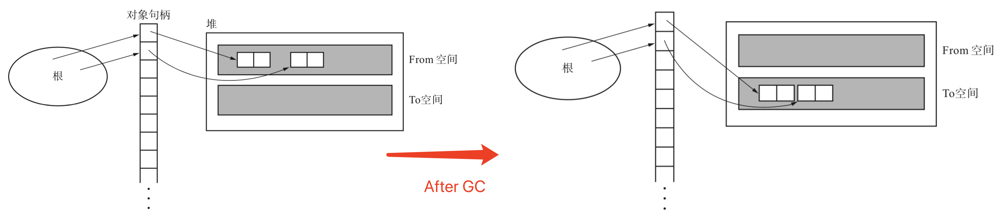
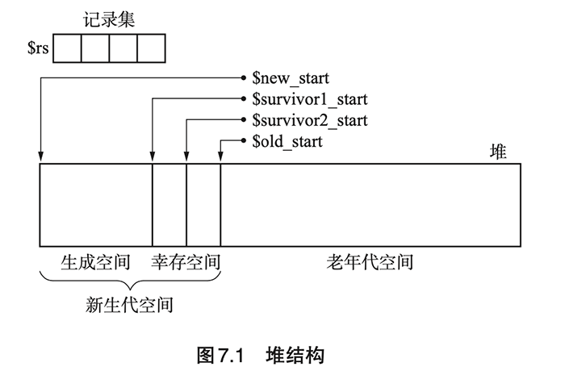
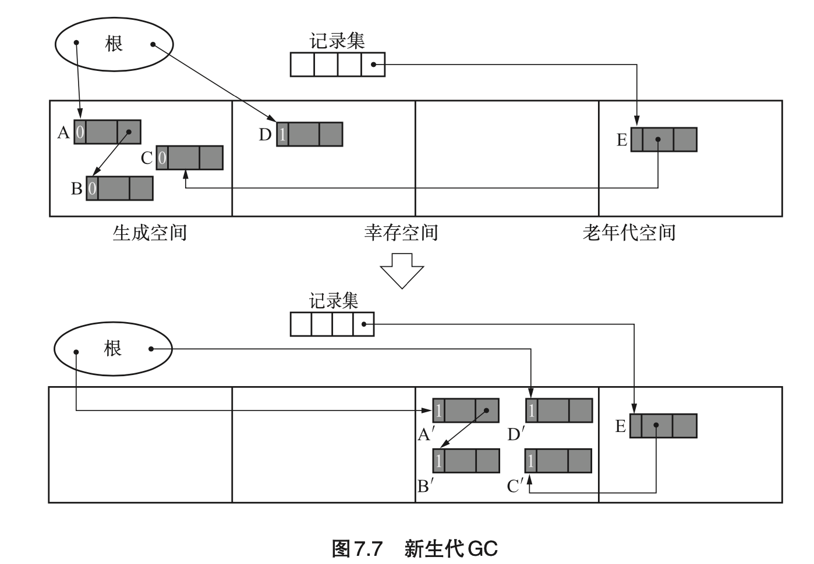

《垃圾回收算法与实现》读书笔记（第 6-9 章）
书接上回，第 6-9 章的笔记。
Chapter 6：保守式 GC（Conservative GC）
为了实现某一个 GC 算法，需要首先选择 GC 的种类。这里的种类指的是 “保守式 GC” 和 “准确式 GC”。其中，“保守式 GC” 指的是 “不能识别指针和非指针的 GC”。
- （Page：120）不明确的根（root）：
- 无法区分存储在下述位置的值是否为指针：
- 寄存器；
- 调用栈；
- 全局变量空间（.data）。
- 因此保守式 GC 仅遵循 GC 的基本原则 —— “不废弃活动对象”。对于非活动对象，在某些情况下可能不会被回收。
- （Page：120）保守式 GC 在检查不明确的根时进行的基本项目：
- 是不是被正确对齐的值？（如在 64 位 CPU 的情况下，为 8 的倍数）；
- 是不是指着堆内？
- 是不是指着堆内某个对象的开头？
- （Page：122）保守式 GC 的优缺点：
- 优点：语言处理程序不依赖于 GC。
- 缺点：
- 识别指针和非指针需要付出成本；
- 错误识别指针会压迫堆；
- 能够使用的 GC 算法有限（比如无法使用 GC 复制算法，因此这些算法会将根的值重写到新空间，可能会把非指针重写）；
- （Page：123）准确式 GC：能正确识别指针和非指针的 GC。
- 实现上需要语言处理程序的支持；
- 一些创建正确根的方法：
- 打标签：利用“编译器默认生成对齐地址引用”这一条件，使用地址的低 1 位作为标签（对整数打标签，这样 LSB 位为 0 的数值便一定为指针）。
- 不把寄存器和栈等当做根：在处理程序的专门位置创建根。
- 优点：堆里只会留下活动对象；
- 缺点：语言处理程序必须对 GC 进行一些支援。
- （Page：125）间接引用：可用于解决保守式 GC 无法使用“复制算法”的问题。

- 思路：经由“句柄”来间接地处理对象。在移动引用的对象时，只需要修改句柄里的指针就可以了，而无需修改原引用的值。
- 缺点：因为必须将所有对象都间接引用，因此会拉低访问对象内数据的速度，这会关系到整个语言处理程序的速度。
- （Page：127）MostlyCopyingGC：保守式 GC 复制算法，可在不明确的根的环境中运行 GC 复制算法。
- 思路：即把那些不明确的根指向的对象以外的对象都复制的 GC 算法。MostlyCopyingGC 会抛开那些不能移动的对象，而将其他“大部分”的对象都进行复制。
- 前提条件：
- 根是不明确的根；
- 没有不明确的数据结构（GC 能够明确判断对象里的域是指针还是非指针）；
- 对象大小随意。
- 实现步骤：（略）；
- 实现细节：（略）；
- 优点：可以在保守式 GC 中使用 GC 复制算法；
- 缺点：在包含有从根引用的对象的页内，所有的对象都会被看成活动对象。一定程度上降低了内存的使用率。
- （Page：139）黑名单：可以改善“指针错误识别”的问题。
- “黑名单”是一种创建“需要注意的地址的名单”的方法。名单中记录的是“不明确的根内的非指针，其指向的是有可能被分配对象的地址（比如堆内未使用对象的地址）”；
- 在将对象分配到需要注意的地址时，所分配对象有着如下限制条件：
- 小对象；
- 没有子对象的对象。
- 黑名单在“标记”阶段创建。
Chapter 7：分代垃圾回收（Generational GC）
即在对象中引入了“年龄”的概念，通过优先回收容易成为垃圾的对象，提高垃圾回收的效率。这基于一个总结出的经验：“大部分的对象在生成后马上就变成了垃圾，很少有对象能活得很久。”
- （Page：143）分代：
- 刚生成的对象称为“新生代对象”，到达一定年龄的对象则称为“老年代对象”。对新对象执行的 GC 称为“新生代 GC”（minor GC），对老对象执行的 GC 称为“老生代 GC”（major GC）。新生代对象上升为老年代对象的情况称为“晋升”；
- 新生代 GC 执行频率较高，老生代 GC 执行频率较低。
- （Page：143）Ungar 的分代垃圾回收：
- 堆结构：

- 论文中，生成空间、幸存空间以及老年代空间的大小分别设为了 140K 字节、28K 字节和 940K 字节。
- 实现细节：
- 对象头的结构：
- 对象的年龄（age）；
- 已经复制完毕的标志（forwarded）；
- 已经向记录集记录完毕的标志（remembered）；
- 对象的种类；
- 对象的大小。
- 生成空间中会分配新对象，当生成空间满时，新生代 GC 就会启动，将生成空间中的活动对象复制到幸存空间。2 个幸存空间与 GC 复制算法中的 From 空间、To 空间类似，当执行新生代 GC 时，活动对象就会被复制到另一个幸存空间。而生成空间和 From 幸存空间这两个空间内的活动对象都会被复制到 To 幸存空间中。
- 从一定次数的新生代 GC 中存活下来的对象会被到晋升，被复制到老年 代空间去；

- 可能存在从老生代到新生代的引用，这部分引用会被记录在“记录集”中。而这部分引用也需要被当作根进行处理（用于搜索新生代的活动对象）；
- 利用“写入屏障”将老年代对象记录到记录集中。三个条件：
- 发出引用的对象是不是老年代对象；
- 指针更新后的引用的目标对象是不是新生代对象；
- 发出引用的对象还没有被记录到记录集中。
- 当通过新生代 GC 得到晋升的对象把老年代空间占满后，便会执行“老生代 GC”。通过 GC 标记-清除算法清除老生代中的非存活对象。
- 优点：可以改善 GC 花费的时间。据实验表明，分代垃圾回收花费的时间是 GC 复制算法的 1/4；
- 缺点：对于对象会活得很久的程序来说，会产生以下问题：
- 新生代 GC 所花费的时间增多；
- 老年代 GC 频繁运行。
- 总结：只有当新生代 GC 带来的速度提升效果大于写入屏障对速度造成的影响时，分代垃圾回收才能够更好地发挥作用。
- （Page：156）多代垃圾回收：除了最老的那一代之外，每代都有一个记录集。X 代的记录集只记录来自比 X 老的其他代的引用。综合来看，少设置一些分代能得到更优秀的吞吐量，据说分为 2 代或者 3 代是最好的。
- （Page：157）列车垃圾回收：（略）。
Chapter 8：增量式垃圾回收（Incremental GC）
是将 GC 和 mutator 一点点交替运行的手法。
- （Page：168）增量式 GC 标记-清除算法：
- 基本流程：
- 根查找阶段：把能直接从根引用的对象涂成灰色；
- 标记阶段：查找灰色对象，将其子对象也涂成灰色，查找结束后将灰色对象涂成黑色；
- 清除阶段：查找堆，将白色对象连接到空闲链表，将黑色对象变回白色。
- 优点：缩短最大暂停时间；
- 缺点：降低了吞吐量（使用了“写入屏障”）。
- （Page：174）Steele 算法 & 汤浅算法：（略）。
Chapter 9： RC Immix 算法
（略）